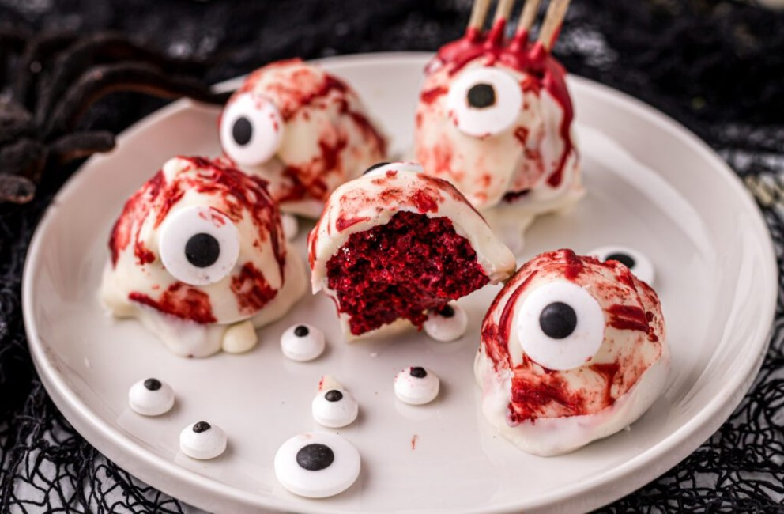

Eyeball cake pops

Ingredients
- Betty Crocker cake mix
- Orange vegan frosting
- Food coloring - blue and red
- 300g white chocolate
- 1 tbsp coconut oil
- Dark chocolate drops
- Maple syrup (or any syrup)
- Plastic knives
Preparation
- Bake the cake as per instructions and let it cool
- Crumble the cake and add the frosting
- Shape into balls and freeze for an hour
- Melt the white chocolate with some coconut oil in the microwawe
- Dip the balls into the white chocolate
- Mix some of the white chocolate with the blue coloring in a shallow dish
- Dip only a tip of the balls to create a round shape
- While still wett, add one chocolate drop in the middle of the blue circle
- Add red veins to the eyes